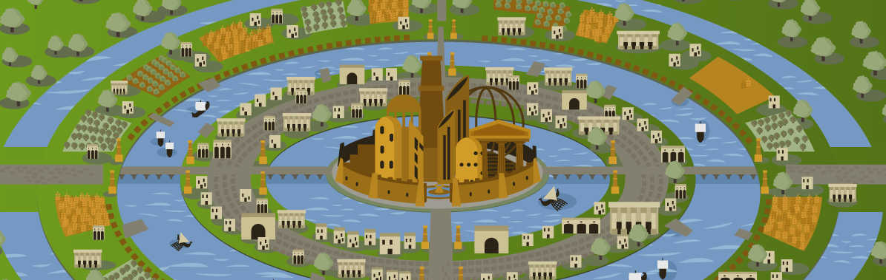

Um dia, vasculhando o sótão da casa da minha avó, encontrei um diário antigo que falava sobre uma cidade secreta, repleta de maravilhas naturais. O diário trazia enigmas que eu decidi desvendar!
Em Serra Azul, você inicia sua aventura nas montanhas antigas, procurando a primeira pista entre as trilhas antigas.
No Vale do Sol, você visita a cidade histórica de Pedra Branca. Uma pista sugere procurar inscrições em locais marcantes da região. Onde começar?
Na antiga mina de Serra Azul, você encontra um símbolo misterioso indicando que a próxima pista está no Pantanal Dourado.

Você decide que a exploração é arriscada demais e retorna para casa, mas sempre sonha com o que poderia ter descoberto.
Nas praças históricas de Pedra Branca, você encontra um mapa antigo escondido em uma estátua. Ele indica que a próxima pista está no Pantanal Dourado.
Percorrendo as trilhas da Serra Dourada, você encontra uma caverna, mas ela está bloqueada por rochas caídas.
No Pantanal Dourado, a busca se intensifica. Você chega a uma bifurcação no rio.
De volta às praças, você encontra o mapa antigo. Agora é hora de seguir para o Pantanal Dourado!
O rio principal leva você a uma ilha secreta com inscrições revelando a entrada da cidade perdida.
O rio menor termina em pântanos densos, onde nada parece indicar a cidade perdida.

Na cidade perdida, você encontra uma biodiversidade incrível e decide documentar e proteger este lugar único.
Voltando e escolhendo o rio principal, você finalmente alcança a ilha secreta e descobre a entrada da cidade perdida.